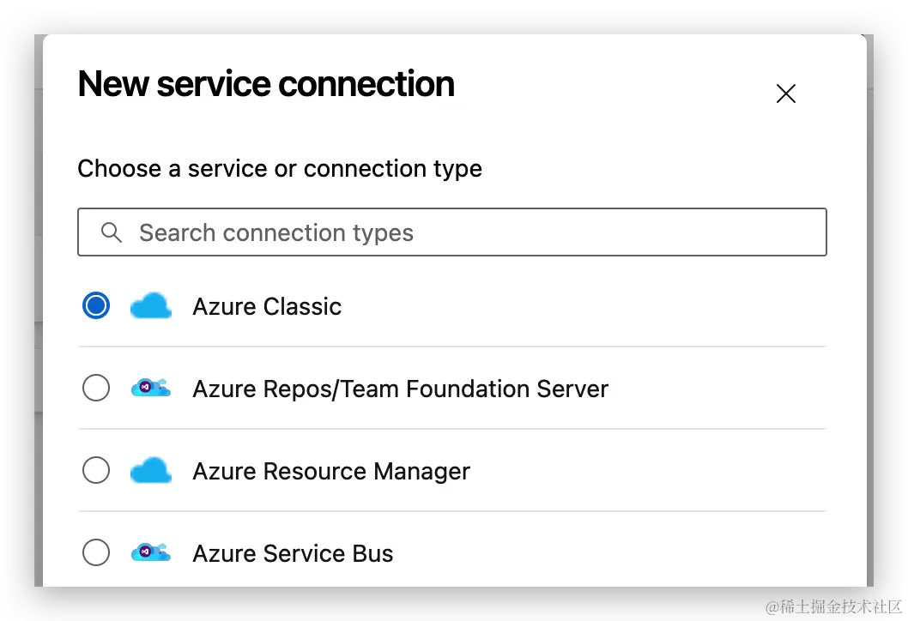
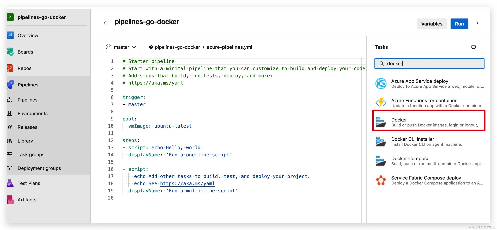

6 基于Azure DevOps的Golang项目容器化CI/CD实战
一 背景
在现代软件开发中，容器化和持续集成/持续部署（CI/CD）已成为关键的实践。Golang作为一种高效、可靠的编程语言，被广泛应用于开发云原生应用和微服务。Azure DevOps是一套功能强大的DevOps工具，提供了CI/CD流水线的构建、测试、部署和监控等功能。
本实战旨在演示如何使用Azure DevOps将Golang项目容器化，并通过CI/CD流水线自动化部署到Azure App Service服务中。Azure App Service是一种托管的云服务，可以轻松地托管和扩展Web应用程序，支持多种编程语言和框架。
通过将Golang项目容器化并使用Azure DevOps进行CI/CD，可以实现快速、可靠的部署和自动化测试，提高开发团队的效率和应用程序的质量。同时，利用Azure App Service的托管能力，可以简化部署和运维的工作，让开发者能够更专注于业务逻辑的开发。
先决条件
- 具有活动订阅的 Azure 帐户。 免费创建帐户。
- 一个 GitHub 帐户。 创建一个免费的 GitHub 帐户（如果没有）
- Azure DevOps 组织。 如果你没有组织，请创建一个组织。
- Azure 容器注册表。 创建 Azure 容器注册表（如果还没有）。
二 架构流程

三 实战
3.1 创建项目并托管源码

在Repos中生存链接信息。
密钥信息
cd project
git init
git remote add origin https://183xxx@dev.azure.com/18329xxx/pipelines-go-docker/_git/pipelines-go-docker
git push -u origin --all
3.2 创建Pipeline
Azure Container Registry准备

记录后续用于访问azure container registry信息
registry name: xxxx
login server: xxx.io
username: xx
密码：m0lQgjxxxxxxxx+ACRDX89zc
推送镜像
# 登陆registry
az login
az acr login --name xuelcr
# tag镜像
docker pull mcr.microsoft.com/mcr/hello-world
docker tag mcr.microsoft.com/mcr/hello-world xuelcr/samples/hello-world
# push
docker push xuelcr/samples/hello-world
App Service创建
创建容器类型的App Services


在应用部署配置中，选择了容器类型，以及内置了azure registry 的环境变量
Azure DevOps链接Azure Portal
链接azure 云，用于部署到app server

链接Azure Cloud 控制器，build出来的镜像上传至Azure Container registry中，使用Azure Pipeline中的task进行镜像仓库登陆。


完成链接

- 连接 Azure 容器注册表
在项目的组织配置中添加服务链接

docker registry
配置Azure Container Registry信息

创建服务链接

创建Docker build Agent
由于在Agent中需要执行Docker build，需要一个self-host 类型的Agent来安装Docker，作为pipeline的执行器。
若要将托管服务标识与 Azure Pipelines 配合使用以将 Docker 映像发布到 Azure 容器注册表，我们必须在 Azure VM 上设置自己的自托管代理。
创建 VM
- 导航到 Azure 门户。
- 在左侧导航面板中选择“创建资源”，然后选择“虚拟机”->“创建”。
- 选择你的订阅，然后选择用来创建容器注册表的资源组。
- 为虚拟机命名，并选择一个映像。
- 输入你的用户名和密码，然后选择“查看 + 创建”。
- 查看设置，查看完后选择“创建”。
- 完成部署后，选择“转到资源”。

-
创建代理池
- 在 Azure DevOps 项目中，选择齿轮图标 齿轮图标 导航到“项目设置”。
- 选择“代理池”，然后选择“添加池”。
- 选择“新建”，然后从“池类型”下拉菜单中选择“自托管”。
- 为池指定名称，然后选中“授予对所有管道的访问权限”复选框。

- 完成操作后，选择“创建”。
- 现在选择刚刚创建的池，然后选择“新建代理”。
- 我们将使用此窗口中的说明在前面创建的 VM 中设置代理。 选择“复制”按钮将下载链接复制到剪贴板。

$ mkdir myagent && cd myagent
$ wget https://vstsagentpackage.azureedge.net/agent/3.230.0/vsts-agent-linux-x64-3.230.0.tar.gz
$ tar zxvf vsts-agent-linux-x64-3.230.0.tar.gz
$ ./config.sh
# 配置可以参考：https://learn.microsoft.com/en-us/azure/devops/pipelines/agents/linux-agent?view=azure-devops
# Azure Pipelines: https://dev.azure.com/{your-organization}
# server url：https://dev.azure.com/xxxxxx
# 使用PTA进行认证：6whxpaxxxxxxxxxxx
# Agent pool：docker
至此自托管docker agent已准备就绪
-
设置托管标识
-
在 Azure 门户中，导航到之前创建的 VM。
- 在左侧导航面板中选择“标识”，然后启用“系统分配的标识”。
- 完成后选择“保存”，然后确认选择
- 选择“Azure 角色分配”，然后选择“添加角色分配”。
- 从“范围”下拉菜单中选择“资源组”。
- 选择你的订阅和资源组，然后选择“AcrPush”角色。
- 重复步骤 5 和 6 以添加“AcrPull”角色。

在Agent上安装docker
curl -fsSL get.docker.com -o get-docker.sh
sudo sh get-docker.sh --mirror Aliyun
sudo groupadd docker
sudo usermod -aG docker
sudo chmod 666 /var/run/docker.sock
sudo systemctl restart docker
创建配置Pipeline

trigger:
- master
variables:
dockerRegistryServiceConnection: 'azure-container-registry'
imageRepository: 'xuelcr'
dockerfilePath: '**/Dockerfile'
tag: '$(Build.BuildId)'
stages:
- stage: Build
displayName: Build and publish stage
jobs:
- job: Build
displayName: Build job
pool:
name: 'docker'
steps:
- task: Docker@2
displayName: Build and publish image to Azure Container Registry
inputs:
command: buildAndPush
containerRegistry: $(dockerRegistryServiceConnection)
repository: $(imageRepository)
dockerfile: $(dockerfilePath)
tags: |
$(tag)
3.3 运行测试构建
提交代码后自动运行build pipeline，构建镜像并推送到镜像仓库

完成job后，在容器注册表中查看镜像
[https://learn.microsoft.com/en-us/answers/questions/1434566/unable-to-load-information-to-the-grid-reason-((0)]

添加当前用户到存储库内

添加完成后，可以正常看到存储库。

3.4 创建部署配置
trigger:
- master
variables:
dockerRegistryServiceConnection: 'azure-container-registry'
imageRepository: 'xuelcr'
dockerfilePath: '**/Dockerfile'
tag: '$(Build.BuildId)'
stages:
- stage: Build
displayName: Build and publish stage
jobs:
- job: Build
displayName: Build job
pool:
name: 'docker'
steps:
- task: Docker@2
displayName: Build and publish image to Azure Container Registry
inputs:
command: buildAndPush
containerRegistry: $(dockerRegistryServiceConnection)
repository: $(imageRepository)
dockerfile: $(dockerfilePath)
tags: |
$(tag)
- task: AzureRmWebAppDeployment@4
inputs:
ConnectionType: 'AzureRM'
azureSubscription: 'azure-global'
appType: 'webAppContainer'
WebAppName: 'golang-api-container'
DockerNamespace: 'xuelcr.azurecr.io'
DockerRepository: $(imageRepository)
DockerImageTag: $(tag)
更新应用配置的容器配置环境变量
可以在部署中心中，查看容器内部的日志，一边排查异常。
通过浏览可以查看应用

修改代码进行提交

四 注意实现
- 需要在Azure Devops中链接Azure Container registry和Azure cloud
- 需要配置self-host，并在内部安装运行docker，以便在构建的时候可以进行引用docker.sock
- 存储库目前没有权限，需要添加当前账号到IAM中
- 确保正确配置Azure DevOps环境：在Azure DevOps中创建项目，并设置好与Azure App Service的连接。确保在Azure DevOps中配置了正确的代理、凭据和权限，以便能够与Azure资源进行交互。
- 编写Dockerfile：创建一个Dockerfile来定义Golang项目的容器化配置。确保Dockerfile中包含了正确的基础镜像、依赖项安装、构建和运行命令。
- 配置CI/CD流水线：在Azure DevOps中创建CI/CD流水线，定义构建、测试和部署的步骤。确保流水线中包含了构建Golang项目、构建Docker镜像、推送镜像到容器注册表、部署到Azure App Service等必要的步骤。
- 设置触发器和触发条件：为CI/CD流水线设置触发器，例如当代码提交到特定分支时触发自动构建和部署。另外，可以设置触发条件，例如只有在通过了所有测试后才执行部署步骤。
- 配置环境变量和机密信息：在Azure DevOps中配置环境变量和机密信息，以便在流水线中使用。例如，可以配置容器注册表的凭据、Azure App Service的连接字符串等敏感信息。
- 运行单元测试和集成测试：确保在CI/CD流水线中包含运行Golang项目的单元测试和集成测试的步骤。这可以确保在部署到生产环境之前，项目的质量得到验证。